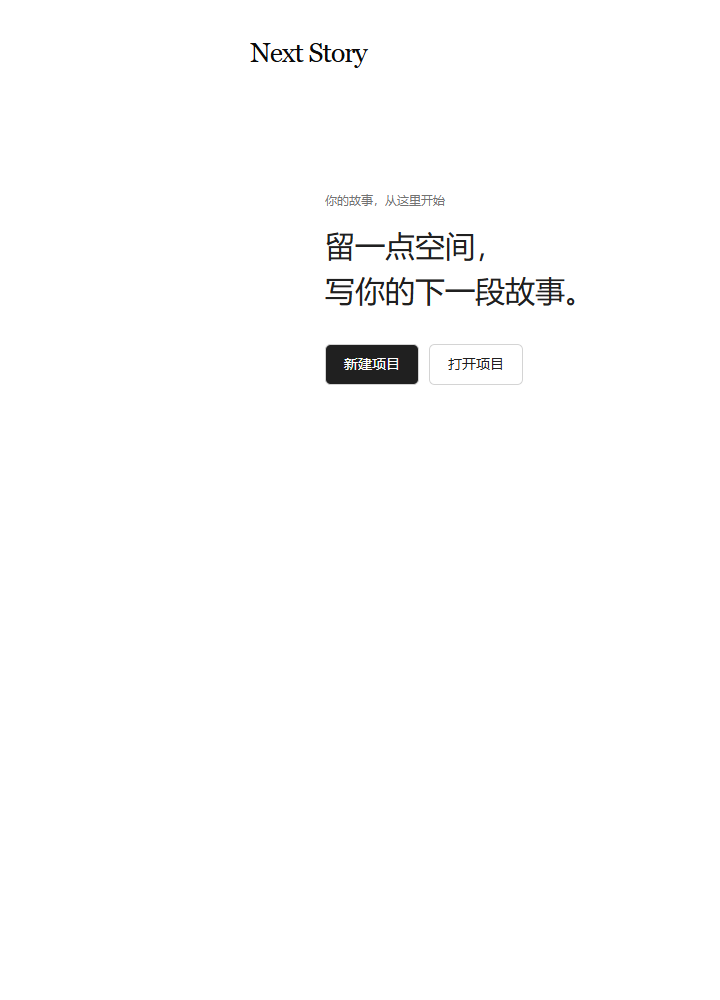
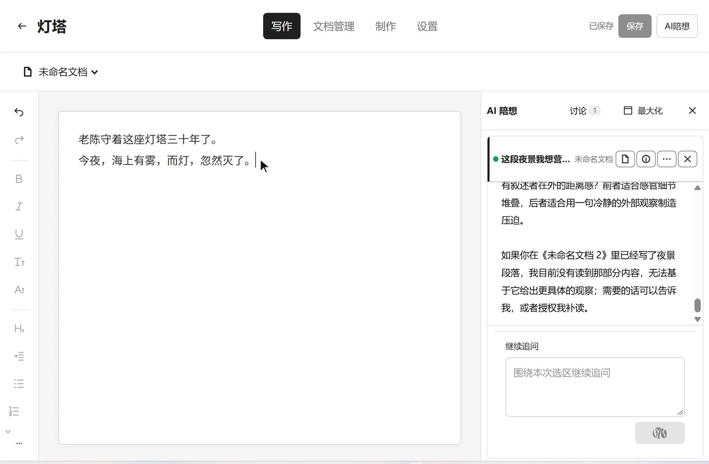
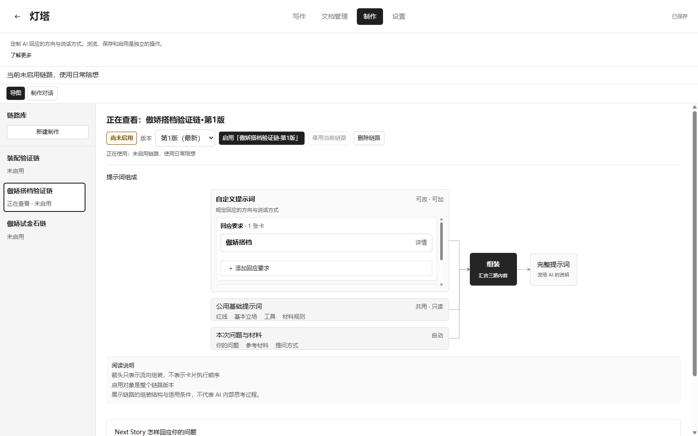

NEXT STORY / 给想写故事的人
故事由你写，
陪你一起想。
辅助剧本创作的陪想软件
在写作空间里亲手写，
AI 面板随时陪你想。
下载 Windows 版当前版本 v0.1.0
亲手写随时陪你想判断权在你手里
围绕你的创作
落笔、提问，
再回到故事。
你亲手创作，AI 陪你想。
01 /写作空间
每一笔，
都由你落下
「项目」就是一个文件夹，用文档收纳你的剧本与创作笔记。在写作空间里亲手写、亲手改，什么进入故事，由你决定。
02 /AI 陪想
随时问，
也可以指着一段问
在 AI 面板直接提问，或选中一段文字，点击旁边的「AI」发起讨论。听听它的观察与问题，看看不同可能；AI 不替你写。
AI 不替你写。
03 /制作模块
陪想的方式，
也可以琢磨
在独立的制作模块里，用思维链路组织陪想的要求与姿态，试问、比较，再选择启用哪个版本。制作时的讨论与日常陪想分开。
要求与姿态试问、比较选择启用哪个版本
04 /导入与导出
带着已有的文字，
接着写
导入 Word、Markdown 或 Final Draft（.fdx）文档，继续创作；需要交稿或留存时，可导出 Word、PDF 或 Markdown。
导入与导出
Word导入 / 导出
Markdown导入 / 导出
.fdx导入
PDF导出
看看软件界面
写作与陪想，并列在眼前。



在自己的电脑上，开始